Kavallerie
62 Einheiten · Untergruppen: Leichte Reiterei, Schwere Reiterei, Berittene Schützen, Elefanten & Streitwagen, Tiere & Dinosaurier, Fahrzeuge & Hubschrauber, Feldherren. Jede Karte zeigt das Aussehen im Spiel, die Kosten, Stärken und Schwächen, alle Werte und einen Tipp. Das Symbol neben dem Namen ist die Klasse – ihr Name erscheint beim Darüberfahren.
Inhalt – alle Einheiten dieser Seite
Urzeit (8)

 Velociraptor Urzeit · vor 75 Mio. Jahren
Velociraptor Urzeit · vor 75 Mio. Jahren
Bataillon: 16 Tiere · 144 Punkte/Goldje Einheit: 9
Flinker, gefiederter Räuber der Oberkreide (vor 75 Mio. Jahren) – hier in der aus Filmen bekannten Größe.
Sehr schnell, scharfe Krallen, jagt im Rudel. Wenig Rüstung.
- Wuchtiger Ansturm: +120 % Schaden beim Aufprall
- Gefährlich im Nahkampf (30 Schaden je Hieb)
- Schnell (12 m/s)
- Eiserne Moral – flieht spät und sammelt sich schnell
- keine auffällige Schwäche
- Speerträger im Wall und Schützen, die Abstand halten

Triceratops Urzeit · vor 67 Mio. Jahren
Bataillon: 2 Tiere · 1.200 Punkte/Goldje Einheit: 600
Pflanzenfresser der Oberkreide mit drei Hörnern und Knochenschild – rund 9 m lang und 9 t schwer.
Gepanzerter Sturmbock: verheerender Hörnerangriff, schwer zu verwunden.
- Wuchtiger Ansturm: +200 % Schaden beim Aufprall
- Schwer gerüstet (50 % Rüstung)
- Sehr zäh: 3.800 Lebenspunkte
- Gefährlich im Nahkampf (140 Schaden je Hieb)
- Hält im Nahkampf lange stand
- Eiserne Moral – flieht spät und sammelt sich schnell
- Trampelt Fußvolk einfach nieder
- Langsam (6,5 m/s)
- Teuer – Verluste schmerzen
- Speerträger im Wall und Schützen, die Abstand halten

Tyrannosaurus rex Urzeit · vor 66 Mio. Jahren
Bataillon: 1 Tiere · 1.400 Punkte/Goldje Einheit: 1.400
Der König der Echsen (vor 68–66 Mio. Jahren): 12 m lang, 8 t schwer, der stärkste Biss aller Landtiere.
Ein Ungeheuer: zerbeißt alles, trampelt Formationen nieder, flieht nie. Sehr teuer.
- Wuchtiger Ansturm: +150 % Schaden beim Aufprall
- Sehr zäh: 5.200 Lebenspunkte
- Gefährlich im Nahkampf (230 Schaden je Hieb)
- Eiserne Moral – flieht spät und sammelt sich schnell
- Trampelt Fußvolk einfach nieder
- Langsam (7,5 m/s)
- Teuer – Verluste schmerzen
- Speerträger im Wall und Schützen, die Abstand halten

Säbelzahntiger Urzeit · um 50.000 v. Chr.
Bataillon: 6 Tiere · 132 Punkte/Goldje Einheit: 22
Smilodon mit bis zu 28 cm langen Eckzähnen – ein Lauerjäger der Eiszeit.
Tödlicher Biss im Ansprung, danach schnell erschöpft.
- Wuchtiger Ansturm: +180 % Schaden beim Aufprall
- Sehr zäh: 380 Lebenspunkte
- Gefährlich im Nahkampf (66 Schaden je Hieb)
- Eiserne Moral – flieht spät und sammelt sich schnell
- keine auffällige Schwäche
- Speerträger im Wall und Schützen, die Abstand halten

Höhlenbär Urzeit · um 40.000 v. Chr.
Bataillon: 6 Tiere · 156 Punkte/Goldje Einheit: 26
Ursus spelaeus: bis 3,5 m groß aufgerichtet und über 500 kg schwer – lebte bis vor etwa 25 000 Jahren.
Gewaltige Prankenhiebe und viel Fleisch. Langsamer als ein Pferd, aber kaum aufzuhalten.
- Kann anstürmen: +80 % Schaden beim Aufprall
- Sehr zäh: 650 Lebenspunkte
- Gefährlich im Nahkampf (62 Schaden je Hieb)
- Eiserne Moral – flieht spät und sammelt sich schnell
- Langsam (6,5 m/s)
- Speerträger im Wall und Schützen, die Abstand halten

Höhlenlöwe Urzeit · um 35.000 v. Chr.
Bataillon: 8 Tiere · 144 Punkte/Goldje Einheit: 18
Panthera spelaea: größer als heutige Löwen, jagte in der Eiszeit Pferde und junge Mammuts.
Schneller Jäger mit wuchtigem Ansprung. Wenig Lebenspunkte für seine Größe.
- Wuchtiger Ansturm: +160 % Schaden beim Aufprall
- Sehr zäh: 320 Lebenspunkte
- Gefährlich im Nahkampf (50 Schaden je Hieb)
- Schnell (10 m/s)
- Eiserne Moral – flieht spät und sammelt sich schnell
- keine auffällige Schwäche
- Speerträger im Wall und Schützen, die Abstand halten
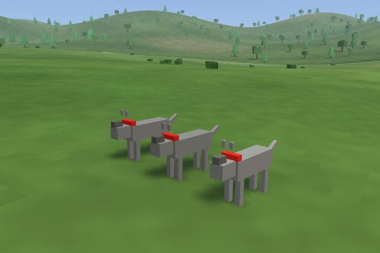
Wolfsrudel Urzeit · um 30.000 v. Chr.
Bataillon: 24 Tiere · 84 Punkte/Goldje Einheit: 3,5
Eiszeitliche Wölfe jagten in großen Rudeln – und begleiteten bald die ersten Menschen.
Schnell und zahlreich, umzingelt Schützen. Einzeln schwach.
- Wuchtiger Ansturm: +100 % Schaden beim Aufprall
- Schnell (11 m/s)
- Eiserne Moral – flieht spät und sammelt sich schnell
- keine auffällige Schwäche
- Speerträger im Wall und Schützen, die Abstand halten

Wollhaarmammut Urzeit · um 20.000 v. Chr.
Bataillon: 4 Tiere · 1.400 Punkte/Goldje Einheit: 350
Mammuthus primigenius: 3 m Schulterhöhe, 6 t, Stoßzähne bis 4 m – Steinzeitjäger erlegten es mit List.
Lebende Ramme: trampelt durch Fußvolk und wirft es um. Teuer und groß – ein leichtes Ziel.
- Wuchtiger Ansturm: +130 % Schaden beim Aufprall
- Sehr zäh: 2.600 Lebenspunkte
- Gefährlich im Nahkampf (90 Schaden je Hieb)
- Eiserne Moral – flieht spät und sammelt sich schnell
- Trampelt Fußvolk einfach nieder
- Langsam (5,5 m/s)
- Teuer – Verluste schmerzen
- Speerträger im Wall und Schützen, die Abstand halten
Antike (21)

 Thessalische Reiterei Antike · 350 v. Chr.
Thessalische Reiterei Antike · 350 v. Chr.
Bataillon: 40 Reiter · 440 Punkte/Goldje Einheit: 11
Die Reiter Thessaliens waren die besten Griechenlands; sie ritten in Rautenform und kämpften mit Speeren – unter Alexander deckten sie die linke Flanke.
Speerreiter: wendig, gut im Flankenangriff, mittlere Rüstung.
- Kann anstürmen: +90 % Schaden beim Aufprall
- Speere, Piken und ein Karree halten Reiter auf – nie frontal hineinreiten
- Speerträger und Pikeniere im Wall oder Karree, Pfähle, Kamele

Equites Extraordinarii Antike · 200 v. Chr.
Bataillon: 40 Reiter · 520 Punkte/Goldje Einheit: 13
Ausgewählte Reiter der Bundesgenossen – die Elite der Ala-Reiterei, ebenfalls direkt dem Konsul unterstellt.
Elite-Reiterei: schnell, gut gerüstet, stark im Flankenangriff.
- Wuchtiger Ansturm: +100 % Schaden beim Aufprall
- Speere, Piken und ein Karree halten Reiter auf – nie frontal hineinreiten
- Speerträger und Pikeniere im Wall oder Karree, Pfähle, Kamele

 Huvaka (Persische Adelsreiter) Antike · 480 v. Chr.
Huvaka (Persische Adelsreiter) Antike · 480 v. Chr.
Bataillon: 40 Reiter · 600 Punkte/Goldje Einheit: 15
Die Elitereiterei des Achämenidenreiches (ca. 550–330 v. Chr.) stammte aus dem Adel – Verwandte und Vertraute des Großkönigs wie Kyros II. und Xerxes.
Schwere Reiter mit Speer und Bogen-Ausbildung: wuchtiger Ansturm, gute Moral.
- Wuchtiger Ansturm: +110 % Schaden beim Aufprall
- Schwer gerüstet (45 % Rüstung)
- Eiserne Moral – flieht spät und sammelt sich schnell
- Speere, Piken und ein Karree halten Reiter auf – nie frontal hineinreiten
- Speerträger und Pikeniere im Wall oder Karree, Pfähle, Kamele

Hetairos Antike · 333 v. Chr.
Bataillon: 40 Reiter · 920 Punkte/Goldje Einheit: 23
Die „Gefährten“ – Alexanders Adelsreiterei, die mit ihm von Makedonien bis Indien ritt.
Schwere Stoßkavallerie für den entscheidenden Schlag in die Flanke.
- Wuchtiger Ansturm: +140 % Schaden beim Aufprall
- Schwer gerüstet (45 % Rüstung)
- Gefährlich im Nahkampf (38 Schaden je Hieb)
- Eiserne Moral – flieht spät und sammelt sich schnell
- Speere, Piken und ein Karree halten Reiter auf – nie frontal hineinreiten
- Speerträger und Pikeniere im Wall oder Karree, Pfähle, Kamele
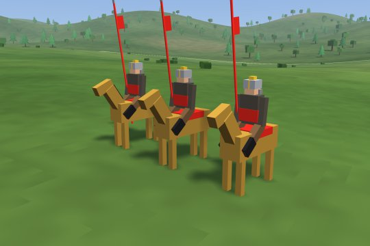
Huben-Garde (Schnell wie Tiger) Antike · 30 v. Chr.
Bataillon: 40 Reiter · 620 Punkte/Goldje Einheit: 15,5
Die Huben („schnell wie Tiger“) waren eine kaiserliche Elitegarde der Han – ob zu Fuß, zu Pferd oder beides, sagen die Quellen nicht eindeutig. Hier als Reitergarde dargestellt.
Elite-Lanzenreiter mit starkem Ansturm.
- Wuchtiger Ansturm: +100 % Schaden beim Aufprall
- Schwer gerüstet (45 % Rüstung)
- Eiserne Moral – flieht spät und sammelt sich schnell
- Speere, Piken und ein Karree halten Reiter auf – nie frontal hineinreiten
- Speerträger und Pikeniere im Wall oder Karree, Pfähle, Kamele
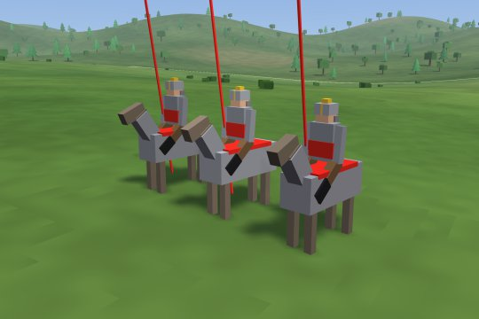
Sarmatische Lanzenreiter Antike · 175 n. Chr.
Bataillon: 40 Reiter · 680 Punkte/Goldje Einheit: 17
Die Sarmaten der Steppe kämpften mit der langen Stoßlanze (Kontos). Rom übernahm 175 n. Chr. rund 5.500 von ihnen als Hilfsreiter – manche dienten in Britannien.
Schwere Lanzenreiter mit der längsten Lanze: verheerender Aufprall.
- Wuchtiger Ansturm: +140 % Schaden beim Aufprall
- Schwer gerüstet (55 % Rüstung)
- Eiserne Moral – flieht spät und sammelt sich schnell
- Speere, Piken und ein Karree halten Reiter auf – nie frontal hineinreiten
- Speerträger und Pikeniere im Wall oder Karree, Pfähle, Kamele

Kataphrakt Antike · 300 n. Chr.
Bataillon: 40 Reiter · 1.120 Punkte/Goldje Einheit: 28
Parther, Sassaniden und Byzantiner panzerten Ross und Reiter vollständig in Schuppen.
Der Panzer der Antike: kaum zu verwunden, verheerend im Ansturm, aber langsam.
- Wuchtiger Ansturm: +130 % Schaden beim Aufprall
- Schwer gerüstet (70 % Rüstung)
- Sehr zäh: 240 Lebenspunkte
- Hält im Nahkampf lange stand
- Speere, Piken und ein Karree halten Reiter auf – nie frontal hineinreiten
- Langsam für Reiter (6,8 m/s)
- Speerträger und Pikeniere im Wall oder Karree, Pfähle, Kamele

 Kamelreiter Antike · 853 v. Chr.
Kamelreiter Antike · 853 v. Chr.
Bataillon: 40 Reiter · 640 Punkte/Goldje Einheit: 16
Arabische Kamelreiter erscheinen 853 v. Chr. bei Qarqar erstmals in den Quellen. Pferde scheuen vor Geruch und Anblick der Kamele.
Bogenschütze auf dem Kamel: zäh und ausdauernd. Feindliche Pferde scheuen – gegen Reiterei im Vorteil.
- Fernkampf bis 140 m (25 Schaden je Treffer)
- Plänkler: weicht dem Nahkampf aus und schießt weiter
- Kamele: Pferde scheuen davor – feindliche Reiter verlieren Angriffskraft
- Speere, Piken und ein Karree halten Reiter auf – nie frontal hineinreiten
- Speerträger und Pikeniere im Wall oder Karree, Pfähle, Kamele
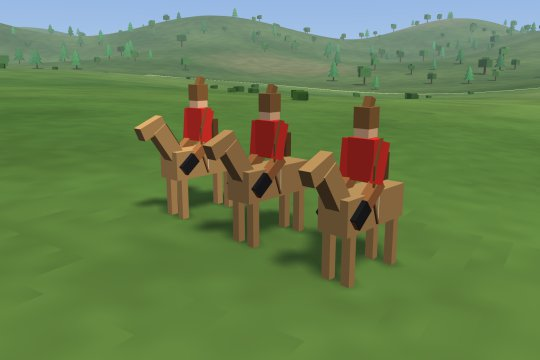
Skythischer Reiter Antike · 500 v. Chr.
Bataillon: 40 Reiter · 600 Punkte/Goldje Einheit: 15
Die Reitervölker der Steppe kämpften schon zu Herodots Zeit vom Pferderücken aus mit dem kurzen Reflexbogen.
Umkreist den Feind und überschüttet ihn mit Pfeilen. Weicht jedem Nahkampf aus.
- Fernkampf bis 140 m (24 Schaden je Treffer)
- Schnell (10 m/s)
- Plänkler: weicht dem Nahkampf aus und schießt weiter
- Speere, Piken und ein Karree halten Reiter auf – nie frontal hineinreiten
- Speerträger und Pikeniere im Wall oder Karree, Pfähle, Kamele
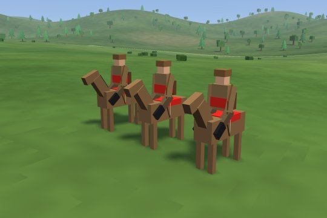
Zhao-Reiterbogenschützen Antike · 307 v. Chr.
Bataillon: 40 Reiter · 480 Punkte/Goldje Einheit: 12
König Wuling von Zhao ließ 307 v. Chr. seine Reiter Hosen nach Art der Steppenvölker tragen und als berittene Bogenschützen kämpfen – eine berühmte Militärreform.
Berittene Bogenschützen: schießen im Ritt und weichen dem Nahkampf aus.
- Fernkampf bis 150 m (26 Schaden je Treffer)
- Schnell (10 m/s)
- Plänkler: weicht dem Nahkampf aus und schießt weiter
- Speere, Piken und ein Karree halten Reiter auf – nie frontal hineinreiten
- Speerträger und Pikeniere im Wall oder Karree, Pfähle, Kamele
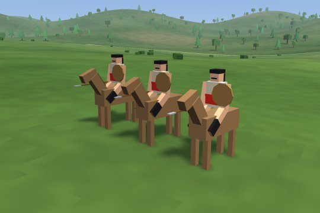
Numidischer Reiter Antike · 202 v. Chr.
Bataillon: 40 Reiter · 480 Punkte/Goldje Einheit: 12
Leichte nordafrikanische Reiter ohne Sattel und Zaumzeug, Hannibals schnellste Waffe.
Wirft Speere im Vorbeireiten und weicht aus. Perfekt, um Flanken und Schützen zu stören.
- Fernkampf bis 35 m (40 Schaden je Treffer)
- Schnell (10 m/s)
- Plänkler: weicht dem Nahkampf aus und schießt weiter
- Speere, Piken und ein Karree halten Reiter auf – nie frontal hineinreiten
- Wenig Munition (10 Schuss) – Lager oder Träger in der Nähe halten
- Speerträger und Pikeniere im Wall oder Karree, Pfähle, Kamele
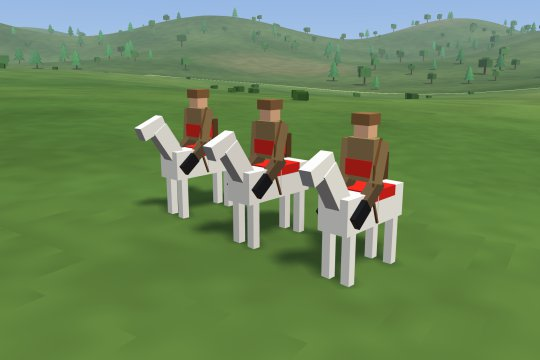
Weißpferdreiter (Baima Yicong) Antike · 191 n. Chr.
Bataillon: 40 Reiter · 560 Punkte/Goldje Einheit: 14
Gongsun Zan führte am Ende der Han-Zeit (um 190 n. Chr.) eine Elite aus berittenen Bogenschützen auf weißen Pferden – die „Weißpferd-Gefolgsleute“.
Berittene Bogenschützen mit guter Nahkampfkraft – schießen erst, stechen dann zu.
- Fernkampf bis 140 m (26 Schaden je Treffer)
- Eiserne Moral – flieht spät und sammelt sich schnell
- Speere, Piken und ein Karree halten Reiter auf – nie frontal hineinreiten
- Speerträger und Pikeniere im Wall oder Karree, Pfähle, Kamele
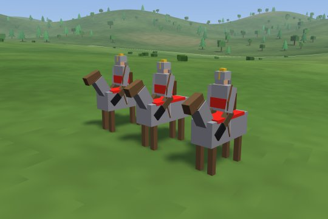
Aswaran (Sassanidische Elitereiter) Antike · 260 n. Chr.
Bataillon: 40 Reiter · 920 Punkte/Goldje Einheit: 23
Die Aswaran (auch Savaran) waren die schwer gepanzerte Elitereiterei der Sassaniden (ab 224 n. Chr.): berittene Bogenschützen, die ebenso im Nahkampf mit der Lanze fochten.
Gepanzerte Reiter mit Bogen und Lanze: erst Beschuss, dann ein harter Ansturm.
- Fernkampf bis 150 m (30 Schaden je Treffer)
- Wuchtiger Ansturm: +120 % Schaden beim Aufprall
- Schwer gerüstet (60 % Rüstung)
- Eiserne Moral – flieht spät und sammelt sich schnell
- Speere, Piken und ein Karree halten Reiter auf – nie frontal hineinreiten
- Langsam für Reiter (7,5 m/s)
- Speerträger und Pikeniere im Wall oder Karree, Pfähle, Kamele
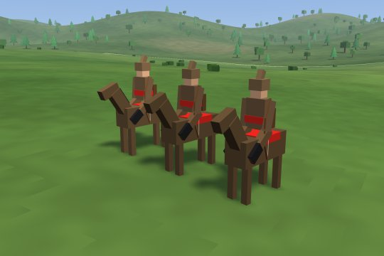
Hunnischer Reiterbogner Antike · 450 n. Chr.
Bataillon: 40 Reiter · 680 Punkte/Goldje Einheit: 17
Die Hunnen Attilas überrannten im 5. Jahrhundert halb Europa – berühmt für ihre Reflexbögen und Ausdauer.
Sehr schneller Bogenreiter mit großer Reichweite. Weicht jedem Nahkampf aus.
- Fernkampf bis 160 m (26 Schaden je Treffer)
- Schnell (10,5 m/s)
- Plänkler: weicht dem Nahkampf aus und schießt weiter
- Speere, Piken und ein Karree halten Reiter auf – nie frontal hineinreiten
- Speerträger und Pikeniere im Wall oder Karree, Pfähle, Kamele

Streitwagen Antike · 1274 v. Chr.
Bataillon: 12 Reiter · 384 Punkte/Goldje Einheit: 32
Zweispänniger Kampfwagen, wie ihn Ägypter und Hethiter bei Kadesch (1274 v. Chr.) einsetzten.
Schneller Bogenschütze auf Rädern, der im Fahren schießt und leichte Truppen überrollt.
- Fernkampf bis 120 m (26 Schaden je Treffer)
- Kann anstürmen: +80 % Schaden beim Aufprall
- Sehr zäh: 320 Lebenspunkte
- Trampelt Fußvolk einfach nieder
- Plänkler: weicht dem Nahkampf aus und schießt weiter
- Speere, Piken und ein Karree halten Reiter auf – nie frontal hineinreiten
- Speerträger und Pikeniere im Wall oder Karree, Pfähle, Kamele
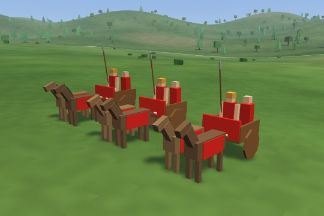
 Hethitischer Streitwagen Antike · 1274 v. Chr.
Hethitischer Streitwagen Antike · 1274 v. Chr.
Bataillon: 10 Reiter · 340 Punkte/Goldje Einheit: 34
Schwerer Dreimann-Wagen der Hethiter: Lenker, Schildträger und Speerkämpfer – bei Kadesch fuhren Tausende.
Wuchtiger Ansturm mit Speeren. Überrennt leichte Truppen, verwundbar gegen Bogenschützen.
- Wuchtiger Ansturm: +130 % Schaden beim Aufprall
- Sehr zäh: 380 Lebenspunkte
- Trampelt Fußvolk einfach nieder
- Speere, Piken und ein Karree halten Reiter auf – nie frontal hineinreiten
- Teuer – Verluste schmerzen
- Speerträger und Pikeniere im Wall oder Karree, Pfähle, Kamele
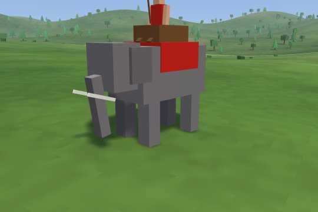
Kriegselefant Antike · 218 v. Chr.
Bataillon: 8 Reiter · 720 Punkte/Goldje Einheit: 90
Hannibal führte sie über die Alpen, Pyrrhus und indische Könige ins Feld – lebende Rammböcke.
Trampelt Infanterie nieder und verbreitet Panik. Anfällig für Speere, Piken und Beschuss.
- Wuchtiger Ansturm: +120 % Schaden beim Aufprall
- Sehr zäh: 1.100 Lebenspunkte
- Gefährlich im Nahkampf (75 Schaden je Hieb)
- Trampelt Fußvolk einfach nieder
- Speere, Piken und ein Karree halten Reiter auf – nie frontal hineinreiten
- Langsam für Reiter (6 m/s)
- Teuer – Verluste schmerzen
- Speerträger und Pikeniere im Wall oder Karree, Pfähle, Kamele
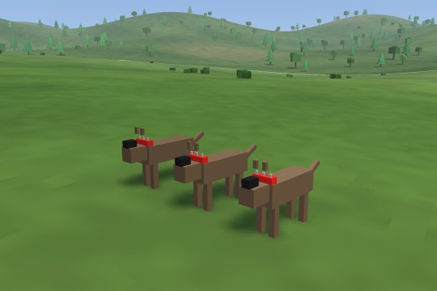
Molosser-Kriegshunde Antike · 400 v. Chr.
Bataillon: 30 Tiere · 75 Punkte/Goldje Einheit: 2,5
Schwere Kampfhunde mit Stachelhalsband – Griechen, Römer und Kelten hetzten sie auf den Feind.
Schnell, billig, stört Schützen und Formationen. Gegen Rüstung schwach.
- Wuchtiger Ansturm: +100 % Schaden beim Aufprall
- Schnell (11 m/s)
- keine auffällige Schwäche
- Speerträger im Wall und Schützen, die Abstand halten
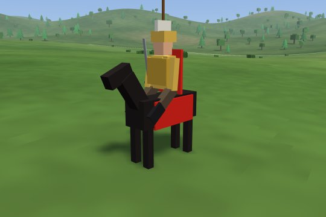
 Alexander der Große Antike · 333 v. Chr.
Alexander der Große Antike · 333 v. Chr.
Feldherr · 1.425 Punkte/Gold
König von Makedonien (336–323 v. Chr.), schlug die Perser bei Issos und Gaugamela und focht stets in vorderster Reihe.
Feldherr: führt die Reiterei selbst an. Hammer und Amboss – während die Phalanx bindet, schickt er die Reiter in die Flanke. Großer Moralschub, aber er setzt sich selbst der Gefahr aus.
- Feldherr „Hammer und Amboss“: führt selbst, schickt die Reiterei in die Flanke (Wirkung im Umkreis von 60 m)
- Wuchtiger Ansturm: +130 % Schaden beim Aufprall
- Schwer gerüstet (62 % Rüstung)
- Fällt der Feldherr, verliert das ganze Heer Moral
- Speerträger und Pikeniere im Wall oder Karree, Pfähle, Kamele
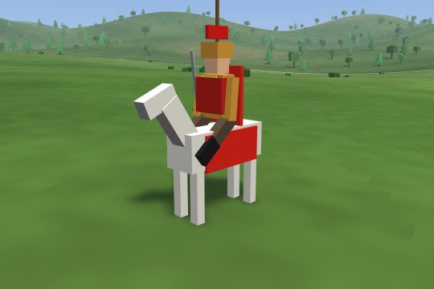
Gaius Iulius Caesar Antike · 52 v. Chr.
Feldherr · 1.350 Punkte/Gold
Eroberer Galliens (58–50 v. Chr.), Sieger von Alesia und Pharsalos – seine Legionen folgten ihm überall hin.
Feldherr: hebt die Moral, schickt Reserven an bröckelnde Stellen, lässt Legionen gegen Pfeile die Schildkröte und gegen Reiter das Karree bilden. Legionäre in seiner Nähe kämpfen härter.
- Feldherr „Legionsdrill“: Moral +, Kampfkraft +12 %, Reserven, Abwehr von Reiterei (Wirkung im Umkreis von 75 m)
- Wuchtiger Ansturm: +130 % Schaden beim Aufprall
- Schwer gerüstet (62 % Rüstung)
- Fällt der Feldherr, verliert das ganze Heer Moral
- Speerträger und Pikeniere im Wall oder Karree, Pfähle, Kamele
Hannibal Barkas Antike · 216 v. Chr.
Feldherr · 1.425 Punkte/Gold
Karthagischer Feldherr, zog mit Elefanten über die Alpen und vernichtete die Römer 216 v. Chr. bei Cannae.
Feldherr: Meister der Umfassung – lässt die Mitte nachgeben und schließt mit der Reiterei von beiden Seiten. Erkennt Reiterangriffe früh.
- Feldherr „Umfassung“: Reiterei schließt von beiden Seiten (Wirkung im Umkreis von 65 m)
- Wuchtiger Ansturm: +130 % Schaden beim Aufprall
- Schwer gerüstet (62 % Rüstung)
- Fällt der Feldherr, verliert das ganze Heer Moral
- Speerträger und Pikeniere im Wall oder Karree, Pfähle, Kamele
Frühmittelalter (4)
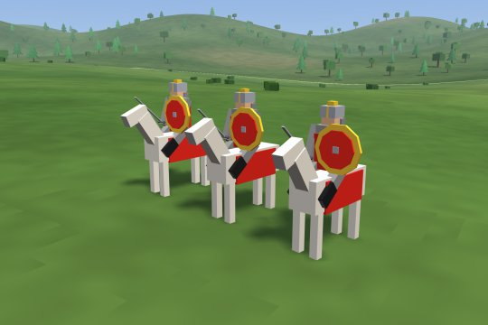
Fränkischer Paladin Frühmittelalter · 800
Bataillon: 40 Reiter · 1.060 Punkte/Goldje Einheit: 26,5
Die Paladine Karls des Großen (um 800): adelige Panzerreiter, besungen im Rolandslied.
Stark im anhaltenden Nahkampf und sehr standhaft – eine Reiterei, die nicht nur anreitet.
- Wuchtiger Ansturm: +110 % Schaden beim Aufprall
- Schwer gerüstet (60 % Rüstung)
- Gefährlich im Nahkampf (40 Schaden je Hieb)
- Hält im Nahkampf lange stand
- Eiserne Moral – flieht spät und sammelt sich schnell
- Speere, Piken und ein Karree halten Reiter auf – nie frontal hineinreiten
- Langsam für Reiter (7,6 m/s)
- Speerträger und Pikeniere im Wall oder Karree, Pfähle, Kamele

Druschina der Kiewer Rus Frühmittelalter · 970
Bataillon: 40 Reiter · 560 Punkte/Goldje Einheit: 14
Die Druschina war das bewaffnete Gefolge der Fürsten der Kiewer Rus (ab dem 10. Jh.) – gut gerüstete Reiter mit Lanze und Säbel.
Schwere Reiter: starker Ansturm, gute Rüstung.
- Wuchtiger Ansturm: +110 % Schaden beim Aufprall
- Schwer gerüstet (50 % Rüstung)
- Hält im Nahkampf lange stand
- Eiserne Moral – flieht spät und sammelt sich schnell
- Speere, Piken und ein Karree halten Reiter auf – nie frontal hineinreiten
- Speerträger und Pikeniere im Wall oder Karree, Pfähle, Kamele
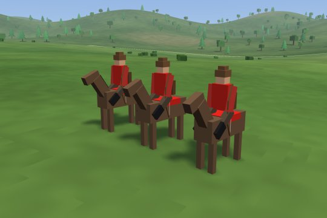
Magyarischer Reiter Frühmittelalter · 900
Bataillon: 40 Reiter · 600 Punkte/Goldje Einheit: 15
Ungarische Reiterkrieger, die im 10. Jh. bis nach Frankreich vorstießen – bis zur Schlacht auf dem Lechfeld 955.
Schneller Bogenreiter für Überfälle und Flankenangriffe.
- Fernkampf bis 140 m (25 Schaden je Treffer)
- Schnell (10,2 m/s)
- Plänkler: weicht dem Nahkampf aus und schießt weiter
- Speere, Piken und ein Karree halten Reiter auf – nie frontal hineinreiten
- Speerträger und Pikeniere im Wall oder Karree, Pfähle, Kamele
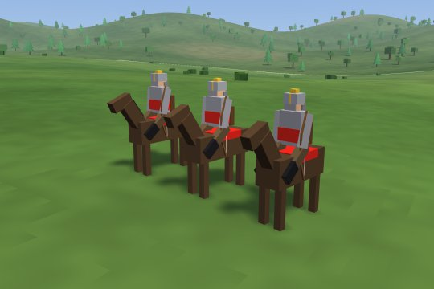
Tagmata-Reiter (Byzanz) Frühmittelalter · 950
Bataillon: 40 Reiter · 640 Punkte/Goldje Einheit: 16
Die Tagmata waren die stehenden Eliteregimenter der byzantinischen Kaiser. Ihre Reiter führten Bogen und Lanze und konnten beides einsetzen.
Gepanzerte Reiter mit Bogen: beschießen den Feind und reiten dann an.
- Fernkampf bis 130 m (24 Schaden je Treffer)
- Wuchtiger Ansturm: +100 % Schaden beim Aufprall
- Schwer gerüstet (50 % Rüstung)
- Eiserne Moral – flieht spät und sammelt sich schnell
- Speere, Piken und ein Karree halten Reiter auf – nie frontal hineinreiten
- Speerträger und Pikeniere im Wall oder Karree, Pfähle, Kamele
Hochmittelalter (14)
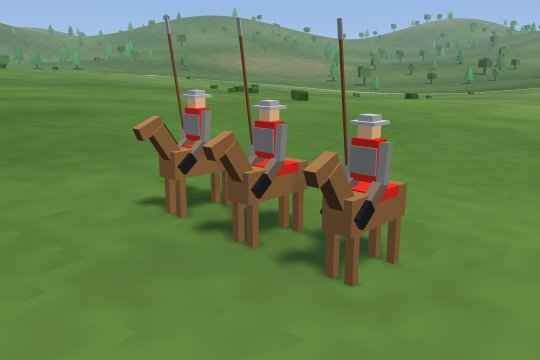
Leichter Reiter Hochmittelalter · 1300
Bataillon: 40 Reiter · 540 Punkte/Goldje Einheit: 13,5
Hobilar und Sergeant: leichter gerüstete Reiter für Aufklärung, Verfolgung und Flankenangriffe.
Schnell und günstig. Ideal, um fliehende Feinde und Schützen zu überreiten.
- Kann anstürmen: +90 % Schaden beim Aufprall
- Speere, Piken und ein Karree halten Reiter auf – nie frontal hineinreiten
- Speerträger und Pikeniere im Wall oder Karree, Pfähle, Kamele

Tempelritter Hochmittelalter · 1180
Bataillon: 40 Reiter · 1.260 Punkte/Goldje Einheit: 31,5
Ordensritter der Kreuzzüge – Mönch und Krieger zugleich, berühmt für ihre eiserne Disziplin.
Schwerer Reiter mit eiserner Moral: weicht nie zurück, ideal für den entscheidenden Stoß.
- Wuchtiger Ansturm: +150 % Schaden beim Aufprall
- Schwer gerüstet (70 % Rüstung)
- Gefährlich im Nahkampf (42 Schaden je Hieb)
- Hält im Nahkampf lange stand
- Eiserne Moral – flieht spät und sammelt sich schnell
- Speere, Piken und ein Karree halten Reiter auf – nie frontal hineinreiten
- Langsam für Reiter (7,6 m/s)
- Speerträger und Pikeniere im Wall oder Karree, Pfähle, Kamele

Ritter Hochmittelalter · 1200
Bataillon: 40 Reiter · 1.000 Punkte/Goldje Einheit: 25
Gepanzerter Lanzenreiter des Hochmittelalters – der Inbegriff des abendländischen Kriegers.
Vernichtender Sturmangriff mit der Lanze. Zurückziehen und erneut anreiten!
- Wuchtiger Ansturm: +150 % Schaden beim Aufprall
- Schwer gerüstet (65 % Rüstung)
- Speere, Piken und ein Karree halten Reiter auf – nie frontal hineinreiten
- Speerträger und Pikeniere im Wall oder Karree, Pfähle, Kamele
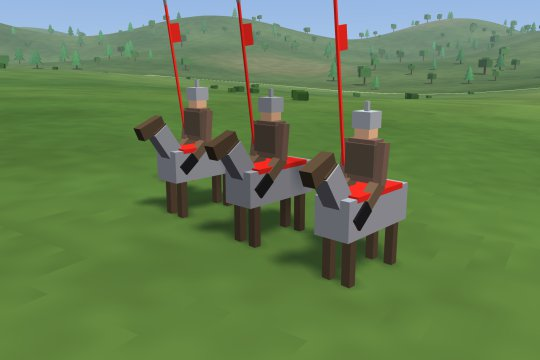
Mongolischer Lanzenreiter Hochmittelalter · 1220
Bataillon: 40 Reiter · 1.040 Punkte/Goldje Einheit: 26
Die schwere Reiterei der Mongolen in Lamellenpanzer – sie gab dem zermürbten Feind den Rest.
Wuchtiger Lanzenangriff, wenn der Feind schon wankt. Zusammen mit Pfeilreitern tödlich.
- Wuchtiger Ansturm: +130 % Schaden beim Aufprall
- Schwer gerüstet (55 % Rüstung)
- Eiserne Moral – flieht spät und sammelt sich schnell
- Speere, Piken und ein Karree halten Reiter auf – nie frontal hineinreiten
- Speerträger und Pikeniere im Wall oder Karree, Pfähle, Kamele
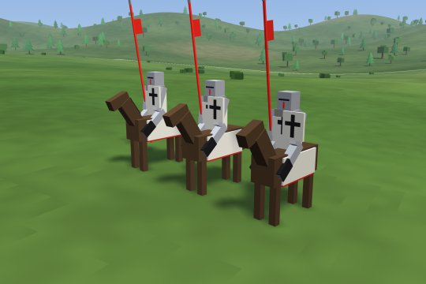
Deutschordensritter Hochmittelalter · 1250
Bataillon: 40 Reiter · 1.140 Punkte/Goldje Einheit: 28,5
Ritter des Deutschen Ordens im weißen Mantel mit schwarzem Kreuz (13.–15. Jh.).
Schwerste Ritterreiterei: kaum zu verwunden, verheerender Ansturm.
- Wuchtiger Ansturm: +150 % Schaden beim Aufprall
- Schwer gerüstet (70 % Rüstung)
- Gefährlich im Nahkampf (42 Schaden je Hieb)
- Hält im Nahkampf lange stand
- Eiserne Moral – flieht spät und sammelt sich schnell
- Speere, Piken und ein Karree halten Reiter auf – nie frontal hineinreiten
- Langsam für Reiter (7,4 m/s)
- Speerträger und Pikeniere im Wall oder Karree, Pfähle, Kamele
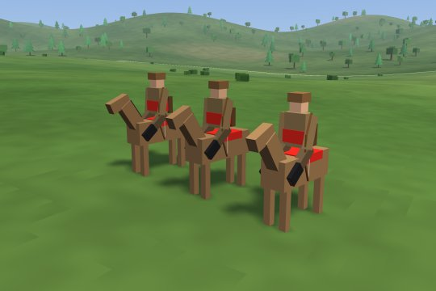
Turkopolen Hochmittelalter · 1150
Bataillon: 40 Reiter · 420 Punkte/Goldje Einheit: 10,5
Leichte Reiter der Kreuzfahrerstaaten, oft einheimischer Herkunft, mit dem Bogen nach Art der Steppenvölker – die Orden setzten sie als Späher und Schützen ein.
Berittene Bogenschützen: schnell, schießen im Ritt.
- Fernkampf bis 140 m (24 Schaden je Treffer)
- Plänkler: weicht dem Nahkampf aus und schießt weiter
- Speere, Piken und ein Karree halten Reiter auf – nie frontal hineinreiten
- Speerträger und Pikeniere im Wall oder Karree, Pfähle, Kamele

Mongolischer Pfeilreiter Hochmittelalter · 1220
Bataillon: 40 Reiter · 740 Punkte/Goldje Einheit: 18,5
Leichte Bogenreiter der Mongolen: jeder Krieger mit mehreren Pferden und zwei Köchern – sie konnten tagelang angreifen.
Schießt im Galopp, lockt mit Scheinflucht und kehrt zurück. Kaum zu fassen, viel Munition.
- Fernkampf bis 170 m (27 Schaden je Treffer)
- Schnell (10,8 m/s)
- Plänkler: weicht dem Nahkampf aus und schießt weiter
- Speere, Piken und ein Karree halten Reiter auf – nie frontal hineinreiten
- Speerträger und Pikeniere im Wall oder Karree, Pfähle, Kamele
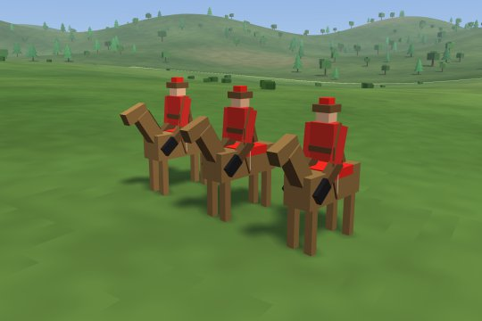
Reiterbogenschütze Hochmittelalter · 1240
Bataillon: 40 Reiter · 720 Punkte/Goldje Einheit: 18
Mongolischer Bogenreiter Dschingis Khans – sein Reich reichte von Korea bis Ungarn.
Schießt im Galopp und lässt sich nicht stellen. Zermürbt jede langsame Armee.
- Fernkampf bis 150 m (26 Schaden je Treffer)
- Plänkler: weicht dem Nahkampf aus und schießt weiter
- Speere, Piken und ein Karree halten Reiter auf – nie frontal hineinreiten
- Speerträger und Pikeniere im Wall oder Karree, Pfähle, Kamele
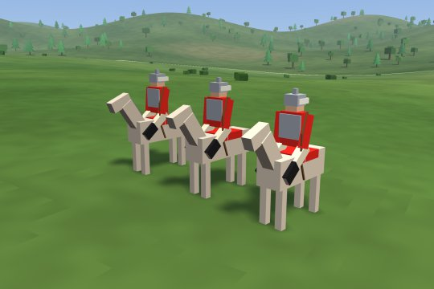
Mameluk Hochmittelalter · 1260
Bataillon: 40 Reiter · 960 Punkte/Goldje Einheit: 24
Ägyptische Kriegerkaste aus ehemaligen Sklaven, die 1260 bei Ain Dschalut die Mongolen schlug.
Elite-Bogenreiter, der auch im Nahkampf mit dem Säbel besteht.
- Fernkampf bis 150 m (30 Schaden je Treffer)
- Eiserne Moral – flieht spät und sammelt sich schnell
- Plänkler: weicht dem Nahkampf aus und schießt weiter
- Speere, Piken und ein Karree halten Reiter auf – nie frontal hineinreiten
- Speerträger und Pikeniere im Wall oder Karree, Pfähle, Kamele
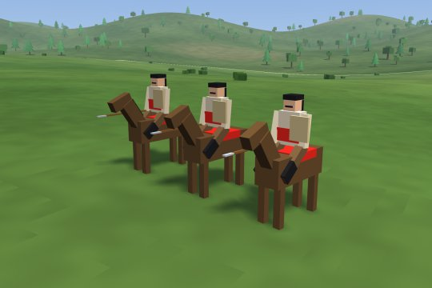
Jinetes (Speerreiter) Hochmittelalter · 1350
Bataillon: 40 Reiter · 400 Punkte/Goldje Einheit: 10
Leichte iberische Reiter, die mit Wurfspeeren angriffen und blitzschnell wieder abdrehten – von den Mauren übernommen, im spanischen Heer bis ins 16. Jh.
Speerreiter: werfen im Ritt, weichen aus und reiben Flanken auf.
- Fernkampf bis 38 m (34 Schaden je Treffer)
- Schnell (10,5 m/s)
- Plänkler: weicht dem Nahkampf aus und schießt weiter
- Speere, Piken und ein Karree halten Reiter auf – nie frontal hineinreiten
- Wenig Munition (8 Schuss) – Lager oder Träger in der Nähe halten
- Speerträger und Pikeniere im Wall oder Karree, Pfähle, Kamele
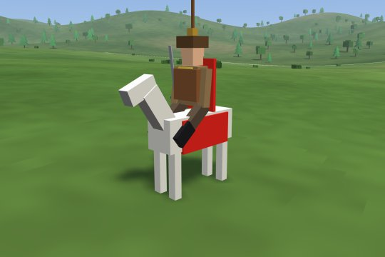
Dschingis Khan Hochmittelalter · 1220
Feldherr · 1.425 Punkte/Gold
Begründer des Mongolenreichs (um 1206), dessen Reiterheere von China bis Europa vordrangen.
Feldherr: berittene Bogenschützen weichen dem Nahkampf aus und schießen weiter (Scheinflucht). Seine Reiter sind schneller und schwer zu stellen.
- Feldherr „Scheinflucht“: berittene Schützen weichen aus und schießen weiter (Wirkung im Umkreis von 80 m)
- Wuchtiger Ansturm: +130 % Schaden beim Aufprall
- Schwer gerüstet (62 % Rüstung)
- Fällt der Feldherr, verliert das ganze Heer Moral
- Speerträger und Pikeniere im Wall oder Karree, Pfähle, Kamele
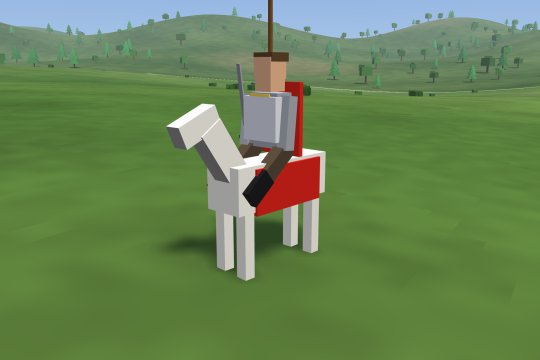
Jeanne d'Arc Hochmittelalter · 1429
Feldherr · 1.275 Punkte/Gold
Die Jungfrau von Orléans (1429): ein Bauernmädchen, das Frankreichs Heer zum Sieg führte.
Feldherrin: gewaltiger Moralschub – fliehende Truppen in ihrer Nähe sammeln sich sofort wieder. Selbst eher schwach im Kampf.
- Feldherr „Die Jungfrau von Orléans“: Fliehende sammeln sich in ihrer Nähe sofort (Wirkung im Umkreis von 95 m)
- Wuchtiger Ansturm: +130 % Schaden beim Aufprall
- Schwer gerüstet (62 % Rüstung)
- Fällt der Feldherr, verliert das ganze Heer Moral
- Speerträger und Pikeniere im Wall oder Karree, Pfähle, Kamele
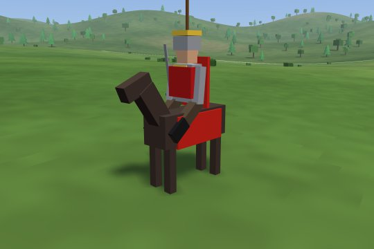
Richard Löwenherz Hochmittelalter · 1191
Feldherr · 1.350 Punkte/Gold
König von England und Anführer des Dritten Kreuzzugs, Sieger bei Arsuf (1191).
Feldherr: furchtloser Kämpfer an der Spitze – Ritter in seiner Nähe schlagen härter zu. Lässt die Armbrustschützen den Reiterangriff vorbereiten.
- Feldherr „Löwenherz“: Ritter in seiner Nähe schlagen deutlich härter zu (Wirkung im Umkreis von 50 m)
- Wuchtiger Ansturm: +130 % Schaden beim Aufprall
- Schwer gerüstet (62 % Rüstung)
- Fällt der Feldherr, verliert das ganze Heer Moral
- Speerträger und Pikeniere im Wall oder Karree, Pfähle, Kamele
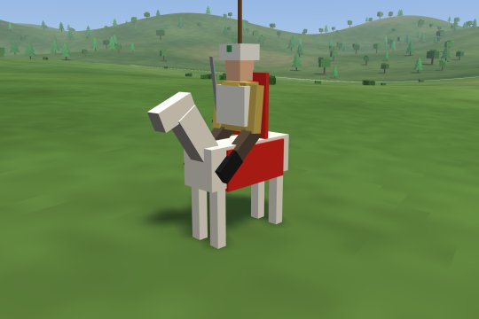
Saladin Hochmittelalter · 1187
Feldherr · 1.350 Punkte/Gold
Sultan von Ägypten und Syrien, schlug 1187 bei Hattin das Kreuzfahrerheer und eroberte Jerusalem.
Feldherr: zermürbt den Feind mit Schützen und schickt die Reiterei erst, wenn er wankt. Ruhiger, geschickter Führer – die Moral seiner Truppen bricht kaum.
- Feldherr „Zermürben“: Schützen konzentrieren das Feuer, Moral bricht kaum (Wirkung im Umkreis von 75 m)
- Wuchtiger Ansturm: +130 % Schaden beim Aufprall
- Schwer gerüstet (62 % Rüstung)
- Fällt der Feldherr, verliert das ganze Heer Moral
- Speerträger und Pikeniere im Wall oder Karree, Pfähle, Kamele
Renaissance (3)

Geflügelte Husaren (Husaria) Renaissance · 1605
Bataillon: 40 Reiter · 880 Punkte/Goldje Einheit: 22
Polen-Litauens schwere Reiterei mit langer, hohler Lanze (kopia) und den berühmten Flügeln. 1605 bei Kircholm schlugen sie ein dreimal so großes schwedisches Heer.
Wuchtigster Reiterangriff der Neuzeit: Lanzen brechen jede Linie – danach Säbel.
- Wuchtiger Ansturm: +170 % Schaden beim Aufprall
- Schwer gerüstet (50 % Rüstung)
- Gefährlich im Nahkampf (38 Schaden je Hieb)
- Hält im Nahkampf lange stand
- Eiserne Moral – flieht spät und sammelt sich schnell
- Speere, Piken und ein Karree halten Reiter auf – nie frontal hineinreiten
- Speerträger und Pikeniere im Wall oder Karree, Pfähle, Kamele

Stradiot Renaissance · 1500
Bataillon: 40 Reiter · 560 Punkte/Goldje Einheit: 14
Albanische und griechische Söldnerreiter der Renaissance mit Wurfspeeren und Säbel.
Wirft im Vorbeireiten Speere und weicht aus. Gefährlich für Schützen.
- Fernkampf bis 35 m (45 Schaden je Treffer)
- Kann anstürmen: +60 % Schaden beim Aufprall
- Schnell (10 m/s)
- Plänkler: weicht dem Nahkampf aus und schießt weiter
- Speere, Piken und ein Karree halten Reiter auf – nie frontal hineinreiten
- Wenig Munition (8 Schuss) – Lager oder Träger in der Nähe halten
- Speerträger und Pikeniere im Wall oder Karree, Pfähle, Kamele
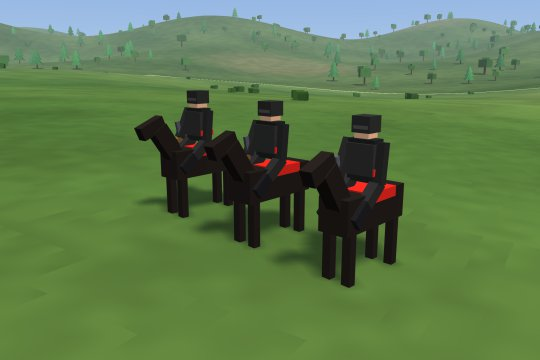
Schwarzer Reiter Renaissance · 1560
Bataillon: 40 Reiter · 880 Punkte/Goldje Einheit: 22
Deutsche Pistolenreiter des 16. Jh. in geschwärzten Rüstungen: Sie ritten an, feuerten ihre Radschlosspistolen ab und schwenkten ab (Caracole).
Schießt aus kurzer Distanz und reitet weiter. Stark gegen Pikeniere, schwach gegen Musketen.
- Fernkampf bis 30 m (70 Schaden je Treffer)
- Schwer gerüstet (55 % Rüstung)
- Plänkler: weicht dem Nahkampf aus und schießt weiter
- Schießt auch auf kurze Entfernung mitten im Gefecht
- Speere, Piken und ein Karree halten Reiter auf – nie frontal hineinreiten
- Wenig Munition (12 Schuss) – Lager oder Träger in der Nähe halten
- Speerträger und Pikeniere im Wall oder Karree, Pfähle, Kamele
Linienzeit (7)

Husar Linienzeit · 1800
Bataillon: 40 Reiter · 760 Punkte/Goldje Einheit: 19
Leichte Reiterei ungarischen Ursprungs mit Säbel und verschnürtem Dolman.
Sehr schnell – ideal, um Schützen und Artillerie zu überrennen. Schwach gegen Piken.
- Wuchtiger Ansturm: +100 % Schaden beim Aufprall
- Speere, Piken und ein Karree halten Reiter auf – nie frontal hineinreiten
- Speerträger und Pikeniere im Wall oder Karree, Pfähle, Kamele
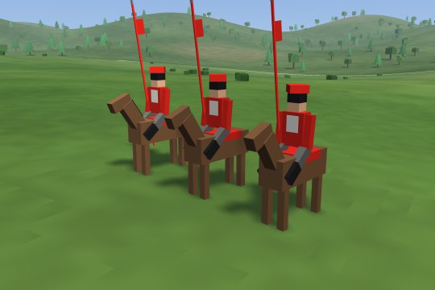
Ulan Linienzeit · 1810
Bataillon: 40 Reiter · 840 Punkte/Goldje Einheit: 21
Lanzenreiter polnischer Herkunft mit der typischen viereckigen Tschapka.
Lange Lanze für einen wuchtigen Ansturm – reicht weiter als die Säbel anderer Reiter.
- Wuchtiger Ansturm: +140 % Schaden beim Aufprall
- Speere, Piken und ein Karree halten Reiter auf – nie frontal hineinreiten
- Speerträger und Pikeniere im Wall oder Karree, Pfähle, Kamele
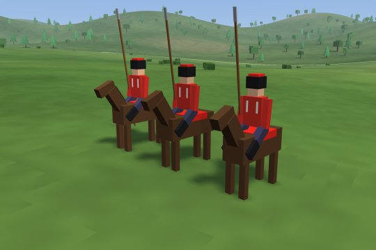
Kosak Linienzeit · 1812
Bataillon: 40 Reiter · 700 Punkte/Goldje Einheit: 17,5
Freie Reiterkrieger der Steppe, die Napoleons Rückzug aus Russland 1812 zur Hölle machten.
Leichte, sehr schnelle Lanzenreiter für Überfälle und Verfolgung.
- Kann anstürmen: +90 % Schaden beim Aufprall
- Speere, Piken und ein Karree halten Reiter auf – nie frontal hineinreiten
- Speerträger und Pikeniere im Wall oder Karree, Pfähle, Kamele

Kürassier Linienzeit · 1805
Bataillon: 40 Reiter · 1.100 Punkte/Goldje Einheit: 27,5
Schwere Schlachtenreiterei mit Brustpanzer (Kürass), Napoleons Hammer bei Eylau und Borodino.
Bricht feindliche Linien im Sturm. Gegen formierte Karrees teuer.
- Wuchtiger Ansturm: +130 % Schaden beim Aufprall
- Schwer gerüstet (50 % Rüstung)
- Speere, Piken und ein Karree halten Reiter auf – nie frontal hineinreiten
- Speerträger und Pikeniere im Wall oder Karree, Pfähle, Kamele

Dragoner Linienzeit · 1750
Bataillon: 40 Reiter · 840 Punkte/Goldje Einheit: 21
Berittene Infanterie – benannt nach dem „Drachen“, einer kurzen Muskete.
Schnell an der Front und feuert vom Pferd. Vielseitig, aber in nichts der Beste.
- Fernkampf bis 100 m (80 Schaden je Treffer)
- Kann anstürmen: +40 % Schaden beim Aufprall
- Speere, Piken und ein Karree halten Reiter auf – nie frontal hineinreiten
- Wenig Munition (14 Schuss) – Lager oder Träger in der Nähe halten
- Langes Nachladen (9 s)
- Speerträger und Pikeniere im Wall oder Karree, Pfähle, Kamele
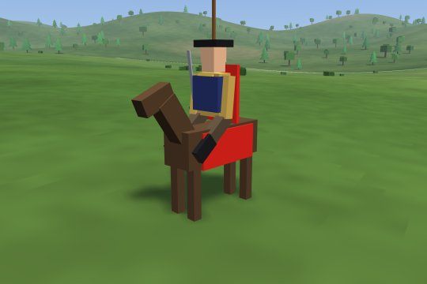
Friedrich der Große Linienzeit · 1757
Feldherr · 1.425 Punkte/Gold
König von Preußen (1740–1786), berühmt für die schiefe Schlachtordnung bei Leuthen 1757.
Feldherr: verstärkt gezielt einen Flügel und greift mit Übermacht dort an. Gedrillte Linien in seiner Nähe laden schneller nach.
- Feldherr „Schiefe Schlachtordnung“: Übermacht an einem Flügel (Wirkung im Umkreis von 75 m)
- Wuchtiger Ansturm: +130 % Schaden beim Aufprall
- Schwer gerüstet (62 % Rüstung)
- Fällt der Feldherr, verliert das ganze Heer Moral
- Speerträger und Pikeniere im Wall oder Karree, Pfähle, Kamele
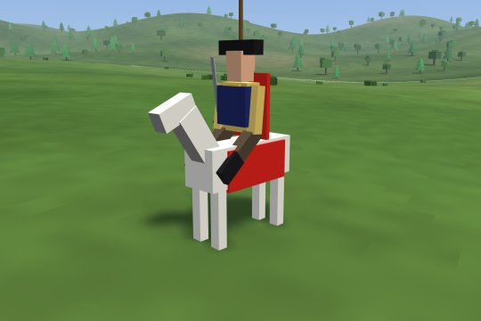
Napoleon Bonaparte Linienzeit · 1805
Feldherr · 1.500 Punkte/Gold
Kaiser der Franzosen, Sieger von Austerlitz (1805) – Meister der Artillerie und der schnellen Bewegung.
Feldherr: die Grande Batterie – alle Geschütze und Schützen nehmen dasselbe Ziel unter Feuer. Schickt Reserven dorthin, wo der Feind schwach wird.
- Feldherr „Grande Batterie“: alle Geschütze auf ein Ziel, Reserven zum Durchbruch (Wirkung im Umkreis von 85 m)
- Wuchtiger Ansturm: +130 % Schaden beim Aufprall
- Schwer gerüstet (62 % Rüstung)
- Fällt der Feldherr, verliert das ganze Heer Moral
- Speerträger und Pikeniere im Wall oder Karree, Pfähle, Kamele
Kalter Krieg (2)
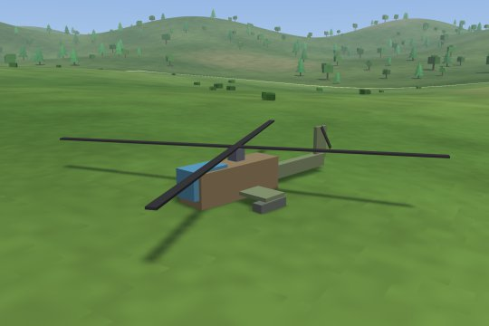
 Kampfhubschrauber AH-1 Cobra Kalter Krieg · 1967
Kampfhubschrauber AH-1 Cobra Kalter Krieg · 1967
Bataillon: 3 Fahrzeuge · 2.160 Punkte/Goldje Fahrzeug: 720
Der erste eigens gebaute Kampfhubschrauber (ab 1967 in Vietnam), schmal und mit Bugturm.
Fliegt über alles hinweg, Raketen gegen Truppen. Nahkämpfer erreichen ihn nicht – nur Schützen.
- Fliegt in rund 16 m Höhe: Nahkämpfer erreichen ihn nicht, Mauern, Gräben und Flüsse sind kein Hindernis
- Fernkampf bis 650 m (80 Schaden je Treffer)
- Flächenwirkung: trifft alles im Umkreis von etwa 2,2 m
- Durchschlägt Panzerung
- Schnell (17 m/s)
- Eiserne Moral – flieht spät und sammelt sich schnell
- Schützen, Maschinengewehre und Raketen holen ihn herunter; abgeschossen stürzt er ab
- Schützen aller Art, besonders Gewehre, MGs und Raketen
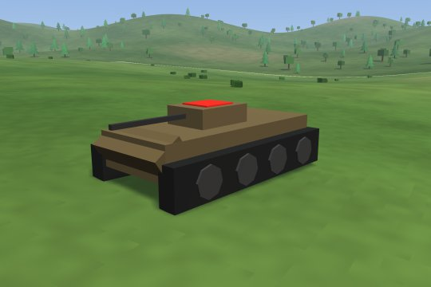
 Schützenpanzer Kalter Krieg · 1970
Schützenpanzer Kalter Krieg · 1970
Bataillon: 4 Fahrzeuge · 1.920 Punkte/Goldje Fahrzeug: 480
Gepanzertes Gefechtsfahrzeug mit Maschinenkanone, das Infanterie begleitet.
Schnell und gepanzert. Zerlegt leichte Fahrzeuge und Infanterie, verliert gegen Kampfpanzer.
- Fernkampf bis 700 m (70 Schaden je Treffer)
- Flächenwirkung: trifft alles im Umkreis von etwa 1,2 m
- Gepanzert: einfache Waffen prallen meist ab
- Durchschlägt Panzerung
- Schnell (11 m/s)
- Eiserne Moral – flieht spät und sammelt sich schnell
- Trampelt Fußvolk einfach nieder
- Panzerabwehr, Minen und schwere Geschütze sind gefährlich
- Panzerfaust, Javelin, Panzerabwehrkanone, Minen, schwere Geschütze
Gegenwart (2)

Kampfhubschrauber AH-64 Apache Gegenwart · 1991
Bataillon: 3 Fahrzeuge · 3.597 Punkte/Goldje Fahrzeug: 1.199
Schwer gepanzerter Kampfhubschrauber (Einsatz ab 1986), im Golfkrieg 1991 berühmt – mit Panzerabwehr-Lenkraketen und Bordkanone.
Panzerjäger der Luft: Lenkraketen durchschlagen jeden Panzer.
- Fliegt in rund 16 m Höhe: Nahkämpfer erreichen ihn nicht, Mauern, Gräben und Flüsse sind kein Hindernis
- Fernkampf bis 1.000 m (320 Schaden je Treffer)
- Flächenwirkung: trifft alles im Umkreis von etwa 3 m
- Gepanzert: einfache Waffen prallen meist ab
- Durchschlägt Panzerung
- Schnell (16 m/s)
- Eiserne Moral – flieht spät und sammelt sich schnell
- Schützen, Maschinengewehre und Raketen holen ihn herunter; abgeschossen stürzt er ab
- Panzerabwehr, Minen und schwere Geschütze sind gefährlich
- Wenig Munition (16 Schuss) – Lager oder Träger in der Nähe halten
- Teuer – Verluste schmerzen
- Schützen aller Art, besonders Gewehre, MGs und Raketen

Humvee Gegenwart · 1995
Bataillon: 6 Fahrzeuge · 2.178 Punkte/Goldje Fahrzeug: 363
Geländewagen der US-Armee (seit 1985) mit schwerem MG auf dem Dach.
Schnell und wendig, schießt im Fahren. Gegen Panzerabwehr verwundbar.
- Fernkampf bis 500 m (34 Schaden je Treffer)
- Gepanzert: einfache Waffen prallen meist ab
- Durchschlägt Panzerung
- Schnell (13 m/s)
- Trampelt Fußvolk einfach nieder
- Plänkler: weicht dem Nahkampf aus und schießt weiter
- Schießt auch auf kurze Entfernung mitten im Gefecht
- Panzerabwehr, Minen und schwere Geschütze sind gefährlich
- Panzerfaust, Javelin, Panzerabwehrkanone, Minen, schwere Geschütze
Zukunft (1)

Schwebe-Gunship Zukunft · 2140
Bataillon: 3 Fahrzeuge · 2.193 Punkte/Goldje Fahrzeug: 731
Ein Kampfschweber der Zukunft mit Mantelpropellern und Energiewaffen.
Schnelle Energie-Salven aus der Luft, sehr robust.
- Fliegt in rund 16 m Höhe: Nahkämpfer erreichen ihn nicht, Mauern, Gräben und Flüsse sind kein Hindernis
- Fernkampf bis 900 m (117 Schaden je Treffer)
- Flächenwirkung: trifft alles im Umkreis von etwa 1,5 m
- Gepanzert: einfache Waffen prallen meist ab
- Durchschlägt Panzerung
- Sehr zäh: 2.700 Lebenspunkte
- Schnell (18 m/s)
- Schützen, Maschinengewehre und Raketen holen ihn herunter; abgeschossen stürzt er ab
- Panzerabwehr, Minen und schwere Geschütze sind gefährlich
- Schützen aller Art, besonders Gewehre, MGs und Raketen